- How to connect your devices
- Connect
by using camera scanning QR code
- Connect through Wi-Fi network
- Connect Wi-Fi Direct capable devices
- Create Wi-Fi Direct software access point to connect devices
- Connect devices through existing mobile hotspot network
(not creating it, since no SDK api for it and carriers
will restrict/provide features for creating mobile
hotspot)
- Share web pages
- Transfer contact information
- Send pictures and videos
- Send
PDF/Word documents
- A few guidelines
-
Three new GUI components are added.
- ConnectionManager: display connected devices, detailed connection parameters, handle peer connection requests
- PeerConnector: actively initiate device connections by
using camera scanning QR code at leader device
- SessionManager:
- start send sessions
- confirm receiving data from peer devices
- monitor the progress of send/receive sessions.
-
ConnectionManager.
- ConnectionManager is started when you press
"PeerDeviceNet" icon on home screen.
- The default rule for connecting devices are "pairing"
and confirmation.
- "Pairing" means that if peer devices (2 or more) start ConnectionManager or touch "Search and connect" buttons within a same short time span/period, they will find each other and connect. "Pairing" here is slightly different, not only for a pair (or two) devices, but could be for 3 or more devices.
- Confirmation means ConnectionManager will prompt user
about peer connection requests and users have to grant
permission before connection complete. If
ConnectionManager is not active at top when peer
connection requests come in, the connection requests
will fail automatically.
- For further security, use PIN.
- For connecting devices to WI-FI network, or setting up WI-FI Direct group, you could use Android native GUI and workflow. When proper, ConnectionManager will provide links to jump to proper place inside Android system preference settings.
- Current Android native GUI doesn't support creating WI-FI direct software access point, which is useful for connecting legacy WI-FI devices. At devices enabled with WI-FI direct, you can use PeerConnector to create WI-FI direct hotspot as leader device, other devices can use front or rear camera to scan leader's QR code to connect, or manually connect using displayed network name (SSID) and passphrase.
- PeerConnector
- You can start PeerConnector two ways: at ConnectionManager, click "Connect by Camera/QR code"; or at SessionManager, hit "add peers".
- PeerConnector provides two ways to connect peer devices:
- By camera scanning QR code. One device will be chosen as leader which will choose network (wifi, wifi direct or mobile hotspot) and generate QR code image; others can join the group and connect to peers by simply scanning leader's QR code using rear or front camera.
- By search and find using network multicast. Similar to at ConnectionManager tapping "Search and connect" button at multiple devices simultaneously; they can find and connect to each other automatically.
-
SessionManager.
- Send
- PeerDeviceNet extends Android's "send and share" feature. So it will be a target inside the "send via" or "share via" lists of many apps.
- Go to apps which own the data you wish to send (such as Gallery for photos and videos), choose the data; choose PeerDeviceNet from "send via" or "share via" list.
- SessionManager GUI will show the connected devices to
allow user choose some or all of them to send data; "Add
peers" button will bring up ConnectionManager to connect
new devices.
- Receive
- When peer sends data, if SessionManager is active at top, it will be updated with new data info; if ConnectionManager is active, SessionManager GUI will be brought up to show new data info. If user is using other apps, a notification will be saved in system notification area to allow bringing up SessionManager later.
- At SessionManager, user can decide accepting some or
all data from peer devices, other unchosen data will be
rejected automatically.
- Progress monitoring
- SessionManager will show the progress of each send/receive session.
- Sessions can be canceled at any time
- When a receive session is finished
- if PeerDeviceNet is active at top, received data will be displayed right away
- if other apps are active, a notification will be
saved to allow user show the data later.
-
Screenshots
| Multiple Devices |
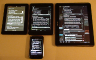 | 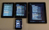 |
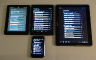 |
||
| Amazon Kindle Fire Android 2.3 |
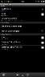 |
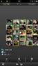 |
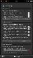 |
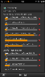 |
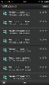 |
| Google Nexus 7 Android 4.1.1 |
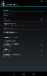 |
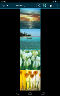 |
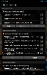 |
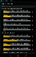 |
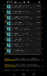 |
| Samsung Galaxy Tab 2.0 Android 4.0.3 |
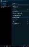 |
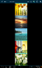 |
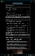 |
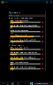 |
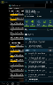 |
| Samsung Galaxy Vibrant Android 2.2 |
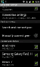 |
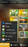 |
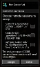 |
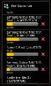 |
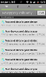 |
{kind=link}
{kind=link}
{kind=link}
{kind=link}
{kind=link}
{kind=link}
{kind=link}
{kind=link}
{kind=link}
{kind=link}
{kind=link}
{kind=link}
{kind=link}
{kind=link}
{kind=link}
{kind=link}
{kind=link}
{kind=link}
{kind=link}
{kind=link}
{kind=link}
{kind=link}
{kind=link}